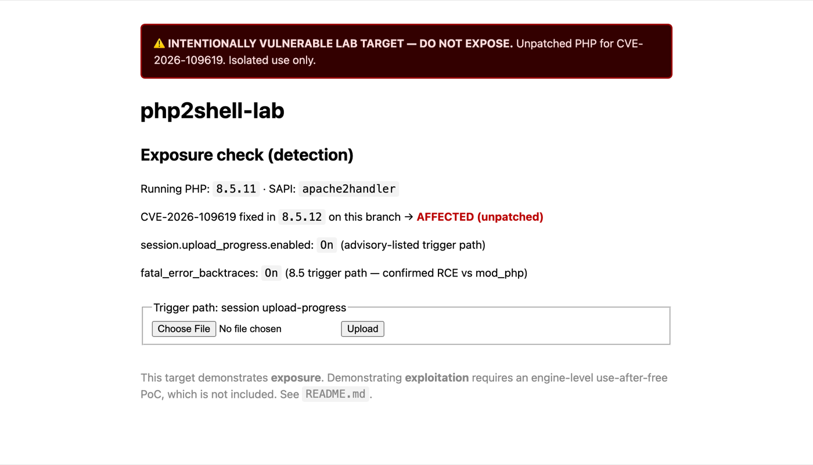
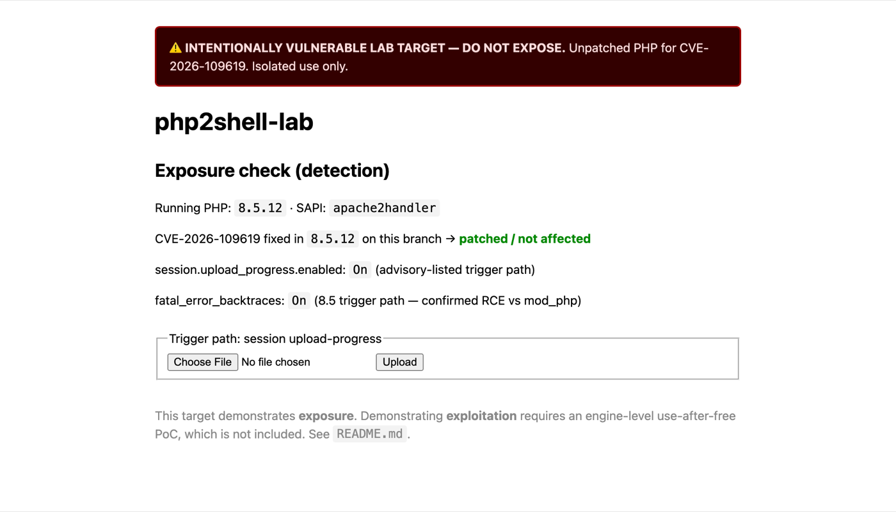

Cydra Research · Vulnerability response
Two critical flaws in the PHP engine, fixed by the same update, affect every website running on an unpatched server, however well the site itself is written. Here is what they mean for the business, and the detection tooling we built and tested to find them and confirm the fix.
The risk in plain language, how exposed a typical estate is, and three decisions to make this week.
Both root causes, affected versions, trigger paths, four detection layers with tested rules and queries, and remediation.
Part 1 · Executive brief
PHP runs a large share of the web: corporate sites, customer portals, WordPress and e-commerce stores. Two newly disclosed flaws in the PHP engine each let an attacker run their own commands on a web server without logging in. They were disclosed together, carry the same critical severity, and are closed by the same update.
The unusual part is that this isn't a mistake in anyone's website code. It sits in the software underneath, so a site your developers wrote perfectly is still exposed if the server runs an old PHP version. Patching the engine is the fix. Rewriting the website isn't.
The attack is technically difficult to pull off reliably, and attempts are noisy: they crash things in recognisable ways. That gives defenders a window and a clear signal to watch for, which is what the tooling below is for.
Snapshot as of 22 October 2026, from public reporting cited below. Exploitation reporting is moving fast — re-check before relying on it.
| Dimension | Rating | Why |
|---|---|---|
| Likelihood of attempts | High | CVE details leaked 20 Oct, a day before the patch. Amazon Threat Intelligence logged a probe against its honeypots on 17 Oct — before disclosure — and more on 21 Oct it attributes to multiple actors; watchTowr and Cloudflare also report early attempts. |
| Exploit maturity | Emerging | A proof-of-concept is circulating, and Datadog says it reproduced the bug. But the PHP Foundation said no functional public exploit existed at disclosure, full RCE is demonstrated only against Apache mod_php (not PHP-FPM), and reliability depends on the server's memory layout. (On attack complexity the two scores split: PHP rates it High, NVD rates it Low.) |
| Impact if exploited | Critical | Unauthenticated remote code execution as the web-server account; even failed attempts can leak memory. Engine-level, so every PHP site on the host is in scope. NVD 9.8 (CVSS 3.1) / PHP 9.2 (CVSS 4.0). |
Amazon says it is not clear the 21 Oct attempts would have succeeded against live systems, and neither CVE is in CISA's Known Exploited Vulnerabilities catalogue yet. Treat exploitation as likely and imminent rather than confirmed at scale — and patch on that basis. Sources: Tenable, watchTowr, Datadog.
Bottom line. Critical impact, network-reachable, no login required, a public PoC, and probing within days of disclosure — against an exploit that is not yet push-button reliable. That is precisely the window to patch in: the stakes are high, attackers are warming up, and the lead time before reliable mass exploitation is short.
We built an isolated lab with two deliberately unpatched PHP servers and used it to develop and test the detection side of these vulnerabilities. We wrote no attack code. The lab answers two questions every security team gets asked: are we exposed? and can we prove the fix worked? Every tool was then run against real PHP servers in that lab, not simulations — the raw console output is shown in the technical section.


The rest of this page is written for the team that will carry those out.
Part 2 · Technical deep-dive
The 22 October 2026 PHP release (8.2.35 / 8.3.36 / 8.4.27 / 8.5.12) fixes two separate, critical memory-corruption flaws in the interpreter. Both reach unauthenticated remote code execution as the web-worker account. NVD scores each 9.8 (CVSS 3.1); PHP's own CNA scores them 9.2 (CVSS 4.0). The two systems disagree on one axis worth noting — NVD rates attack complexity Low, PHP rates it High — which matches the picture below: network-reachable and unauthenticated, but not yet push-button reliable. The 109619 advisory says to follow 109618's remediation as well, and vice versa, because an attack on one tends to touch the other.
The official php.net changelog confirms the shared fix: each release carries one Core entry, "Fixed GHSA-w8hw-w9fx-j79w, GHSA-6wmf-4rv5-p3rp (Avoid state corruption via bailout)." The changelog cites the advisory IDs rather than the CVE numbers; the CVE IDs and scores below come from the advisories themselves.
| CVE | Advisory | Root cause |
|---|---|---|
CVE-2026-109619 | GHSA-6wmf-4rv5-p3rp "RCE via stale global state" | Engine-global state left pointing into a finished request's freed heap (use-after-free, CWE-416). |
CVE-2026-109618 | GHSA-w8hw-w9fx-j79w "RCE via OOM corruption" | An out-of-memory abort (longjmp()) fires before request memory is initialised, leaving it invalid for shutdown to read (CWE-416/-824/-755). |
Persistent SAPIs (mod_php, PHP-FPM) reuse worker processes across requests. Some engine-global state (error, session, object and extension bookkeeping) can still point into the previous request's heap after that request has ended and its memory has been released. If the stale state is touched before request initialisation resets it, the worker dereferences freed memory. That causes memory disclosure at best, and code execution at worst.
PHP uses longjmp() to abandon a request when it runs out of memory. In some code paths request memory is reachable before its setup finishes; if an allocation fails there, the jump leaves that memory half-built, and request shutdown then reads or branches on it. The demonstrated trigger is forcing an out-of-memory condition during input processing. The full RCE was validated against Apache mod_php, which the advisory notes "unconditionally invokes the request shutdown procedure" even when startup failed; PHP-FPM, FrankenPHP and LSAPI are assessed as likely susceptible but were not demonstrated.
Because both bugs are in the engine, application code is irrelevant to exposure. Exposure depends on the PHP build plus the reachable trigger features, which is why the lab has no "vulnerable app". It runs an unpatched engine with the trigger settings on.
| Branch | Fixed in | Status if older |
|---|---|---|
| 8.2.x | 8.2.35 | Affected |
| 8.3.x | 8.3.36 | Affected |
| 8.4.x | 8.4.27 | Affected |
| 8.5.x | 8.5.12 | Affected |
| ≤ 8.1, 7.x, 5.x | No full upstream fix | Treat as exposed |
| CVE | Trigger path | Notes |
|---|---|---|
| 109619 | Session upload-progress (session.upload_progress.enabled) | On by default, so the widest exposure. |
| 109619 | Fatal-error backtrace (fatal_error_backtraces=1) | PHP 8.5 only. Code execution confirmed against mod_php. |
| 109619 | INI diagnostics before request init | Listed in the advisory, narrower in practice. |
| 109618 | Multipart upload with no usable declared length | Passes the up-front post_max_size check, then keeps feeding decoded data. |
| 109618 | Input that is cheap on the wire, costly to decode | Many headers per part, empty file controls (don't count toward max_file_uploads), deeply nested field names. |
They share the exposure check (same fixed versions) and the crash signal (both are memory corruption). But their attack preconditions differ: 109619 is groomed by a burst of upload-progress fields, 109618 by malformed or amplifying input that forces an out-of-memory abort. Each needs its own network rule, below.
There's no fixed exploit byte signature for a memory-corruption race, so these detections focus on exposure (what can be hit), preconditions (what an attacker must do to set it up) and side effects (what a failing exploit leaves behind).
Remote PHP version fingerprint, checked against the fixed builds. Answers "where are we exposed?"
Runs on the server itself. Reports version and both CVEs' trigger settings, and tells "mitigated" apart from "patched".
Flag setup patterns for both bugs: upload-progress bursts, OOM-inducing input and 500 storms.
Worker segfaults, the highest-fidelity signal, correlated with the network patterns.
scan_fleet.py is a Python 3 script with only standard-library dependencies. It reads the PHP version from X-Powered-By, falls back to Server and then the HTML body, and classifies each host as AFFECTED, EOL, PATCHED or UNKNOWN. Exit codes are designed for CI or a scheduled job.
$ python3 scan_fleet.py -f hosts.txt --csv before.csv
TARGET PHP VERDICT
----------------------------------------------
http://127.0.0.1:8080 8.4.26 ❌ AFFECTED (fixed in 8.4.27)
http://127.0.0.1:8085 8.5.11 ❌ AFFECTED (fixed in 8.5.12)
Summary: 2 affected/EOL, 0 errors, 0 patched. # exit 1
# ...after upgrading both containers...
http://127.0.0.1:8080 8.4.27 ✅ PATCHED (fixed in 8.4.27)
http://127.0.0.1:8085 8.5.12 ✅ PATCHED (fixed in 8.5.12)
Summary: 0 affected/EOL, 0 errors, 2 patched. # exit 0Hardened servers set expose_php=Off and hide the version. Those hosts come back UNKNOWN, not clean. Follow up with Layer 2 or your package inventory. Evidence: scan-before.csv · scan-after.csv.
check_mitigations.sh runs on the PHP host and reads the live version and INI settings from php itself. It reports the 109619 toggles (session.upload_progress.enabled, fatal_error_backtraces) and the 109618 surface (memory_limit, post_max_size, and the input/nesting/upload caps), and warns against capping memory with RLIMIT_AS/RLIMIT_DATA — which itself triggers 109618.
The exit code tracks the patch status plus the 109619 toggles, which are clean on/off settings. 109618 has no single safe value, so its settings are advisory and don't change the code.
| Exit | Meaning |
|---|---|
0 | Patched |
1 | Affected, with 109619 trigger paths still enabled. Prints the interim settings to change. |
3 | Affected but mitigated. 109619 paths are off, but the host still needs upgrading. |
2 | php not found in PATH |
php2shell.rules holds eight heuristic rules in the local SID range 1026001–1026008: one for 109619, five for 109618's input-amplification paths, a crude oversized-body rule, and a shared crash signal. Treat them as tunable starting points, not turnkey IOCs. SID 1026003 in particular will fire on any noisy app until you baseline it.
| SID | CVE | Detects | Default threshold |
|---|---|---|---|
1026001 | 109619 | Burst of POSTs carrying PHP_SESSION_UPLOAD_PROGRESS (grooming) | 30 / src / 10s |
1026002 | 109618 | Repeated POSTs declaring Content-Length ≥ 8 MB (crude OOM) | 10 / src / 15s |
1026004 | 109618 | Chunked multipart/form-data (slips past the post_max_size pre-check) | 1 / src / 60s |
1026005 | 109618 | Multipart part with 50+ headers | 1 / src / 60s |
1026006 | 109618 | 40+ empty file controls in one request | 1 / src / 60s |
1026007 | 109618 | 16+ levels of nested field name, multipart body | 1 / src / 60s |
1026008 | 109618 | 16+ levels of nested field name, urlencoded body | 1 / src / 60s |
1026003 | both | HTTP 500 storm from a PHP host (crash side effect) | 20 / dst / 10s |
The 109618 rules target the advisory's real trigger: input that is small on the wire but expensive for PHP to decode. An attack can stay well under any byte-size threshold, so a size rule alone (1026002) misses it; these catch the shape instead.
alert http any any -> $HOME_NET any ( \
msg:"PHP2SHELL CVE-2026-109619 upload_progress field burst (possible UAF grooming)"; \
flow:to_server,established; http.method; content:"POST"; \
http.request_body; content:"PHP_SESSION_UPLOAD_PROGRESS"; nocase; \
threshold:type both, track by_src, count 30, seconds 10; \
classtype:attempted-admin; sid:1026001; rev:2; )
# 109618: multipart part carrying an abnormal number of headers
alert http any any -> $HOME_NET any ( \
msg:"PHP2SHELL CVE-2026-109618 multipart part header flood"; \
flow:to_server,established; http.method; content:"POST"; \
http.content_type; content:"multipart/form-data"; nocase; \
http.request_body; content:"Content-Disposition"; nocase; \
pcre:"/(?:\r\n[A-Za-z0-9-]{1,64}:[^\r\n]{0,256}){50}/"; \
threshold:type limit, track by_src, count 1, seconds 60; \
classtype:attempted-admin; sid:1026005; rev:1; )
# Shared crash signal (both CVEs)
alert http $HOME_NET any -> any any ( \
msg:"PHP2SHELL possible exploitation side effect: HTTP 500 burst from PHP host"; \
flow:to_client,established; http.stat_code; content:"500"; \
threshold:type both, track by_dst, count 20, seconds 10; \
classtype:web-application-attack; sid:1026003; rev:2; )The full eight-rule set is in php2shell.rules. On an internet-facing sensor, scope the inbound rules to $EXTERNAL_NET any -> $HOME_NET.
Network rules show attempts. Logs show consequences. A healthy PHP fleet almost never segfaults a worker, so a spike in segfaults is the strongest single indicator. Full query set: log_detections.md.
# mod_php (Apache error_log)
grep -E "child pid [0-9]+ exit signal Segmentation fault \(11\)" /var/log/apache2/error.log
# PHP-FPM
grep -E "child [0-9]+ (exited on signal 11|SIGSEGV)" /var/log/php*-fpm.log
# Splunk-style: segfaults per host per minute
index=web ("exit signal Segmentation fault" OR "exited on signal 11")
| bin _time span=1m | stats count by host, _time
| where count > 3An attempt signal (upload-progress burst, OOM-fatal burst, or any of SID 1026001–1026008) plus a crash signal (worker segfault) from the same host within 5 minutes. That pairing is very unlikely to be benign.
Every artifact on this page was run, not just written. All testing took place in an isolated Docker lab bound to 127.0.0.1 on an internal network.
| Artifact | Test | Result |
|---|---|---|
| Suricata rules | Loaded with suricata -T on Suricata 7.0.11 | Pass All 8 load cleanly |
| Suricata rules | Replayed against real captured mod_php traffic (Apache 8.4.26 on the live lab): upload-progress burst, 9 MB POSTs, chunked multipart, a 60-header part, 120 empty file controls, 20-level nested names (multipart and urlencoded), genuine HTTP 500s, plus two benign control posts. Capture verified at 0 dropped packets. | Pass All 8 SIDs fire once each. Both controls stay quiet. |
scan_fleet.py | Run against the live mod_php lab (real X-Powered-By): unpatched 8.4.26 / 8.5.11, then patched 8.4.27 / 8.5.12. Mock hosts additionally cover EOL (8.1), hidden version and unreachable. | Pass AFFECTED → exit 1, PATCHED → exit 0. Edge cases as documented. |
check_mitigations.sh | Run inside the live containers (8.5.11 and patched 8.4.27) plus official images for the remaining exit paths | Pass Reports both CVEs' settings. Exit codes 1, 0, 1 and 3 as documented |
| Lab targets | Real unpatched 8.4.26 and 8.5.11 (mod_php) upgraded to 8.4.27 and 8.5.12 | Pass Exposure page and scanner both flip from AFFECTED to patched |
Not a slide that says "Pass" — the actual console output from those runs.
Fleet scanner — the same command before and after the patch, against the live lab:
$ python3 scan_fleet.py http://127.0.0.1:8080 http://127.0.0.1:8085
http://127.0.0.1:8080 8.4.26 ❌ AFFECTED (fixed in 8.4.27)
http://127.0.0.1:8085 8.5.11 ❌ AFFECTED (fixed in 8.5.12)
Summary: 2 affected/EOL, 0 errors, 0 patched. → exit 1
# ...after upgrading both hosts to the fixed builds...
http://127.0.0.1:8080 8.4.27 ✅ PATCHED (fixed in 8.4.27)
http://127.0.0.1:8085 8.5.12 ✅ PATCHED (fixed in 8.5.12)
Summary: 0 affected/EOL, 0 errors, 2 patched. → exit 0Suricata — all eight rules on a 103 MB capture of real mod_php traffic (0 packets dropped by the kernel):
$ suricata -r lab-real.pcap -S php2shell.rules \
--set vars.address-groups.HOME_NET=[172.16.0.0/12]
1 [1:1026001] CVE-2026-109619 upload_progress field burst
1 [1:1026002] CVE-2026-109618 repeated oversized POST (crude OOM)
1 [1:1026004] CVE-2026-109618 chunked multipart
1 [1:1026005] CVE-2026-109618 multipart part header flood
1 [1:1026006] CVE-2026-109618 multipart empty file-control flood
1 [1:1026007] CVE-2026-109618 deeply nested multipart field name
1 [1:1026008] CVE-2026-109618 deeply nested urlencoded field name
1 [1:1026003] (both) HTTP 500 burst — real mod_php 500s
→ 8 / 8 rules fired, once each. Benign control requests: 0 alerts.Host posture check — run inside the live 8.5.11 container:
$ docker exec php2shell-85 bash check_mitigations.sh
CVE-2026-109618 / 109619 mitigation check
PHP version : 8.5.11
Fixed in : 8.5.12 -> AFFECTED ❌
session.upload_progress.enabled : On
fatal_error_backtraces : On
memory_limit : 128M post_max_size : 8M max_input_nesting_level : 64
→ exit 1All of this reproduces from the repo: docker compose up, then the three commands above.
session.upload_progress.enabled=0, and on 8.5 also set fatal_error_backtraces=0. Then restart every worker: the settings only apply to new workers.memory_limit=-1; also keep post_max_size tight and cap max_input_vars, max_input_nesting_level and max_file_uploads. Do not cap process memory with RLIMIT_AS/RLIMIT_DATA — that makes allocations fail and triggers the very bug.check_mitigations.sh should exit 0 on each host, the fleet scan should exit 0, and segfault counts should return to baseline. All interim steps reduce exposure but don't remove it.expose_php=Off, and some vendors backport fixes without changing the version string. Confirm with the vendor's package changelog.| File | What it is |
|---|---|
| scan_fleet.py | Remote fleet exposure scanner (Python 3, standard library only) |
| check_mitigations.sh | On-host version and mitigation check (bash) |
| php2shell.rules | Suricata 7 rules for both CVEs, SIDs 1026001–1026008 |
| log_detections.md | grep and SIEM queries plus the correlation rule |
| scan-before.csv · scan-after.csv | Raw scanner evidence from the lab |
Free to use and adapt. Provided as-is. Test in your own environment before deploying.